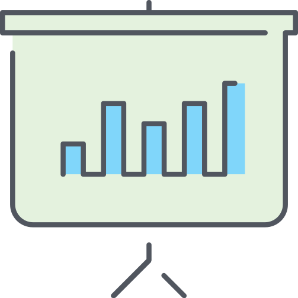
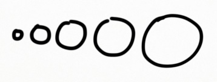

DATA LOOKS BETTER NAKED
DATA LOOKS BETTER NAKED
DATA LOOKS BETTER NAKED
Author: Joey Cherdarchuk
not when there is nothing more to add,
but when there is nothing left to take away”
– Antoine de Saint-Exupery

Source: The Visual Display of Quantitative Information by Edward Tufte
- the non-erasable core of the graphic,
- the non-redundant ink arranged in response to variation in the numbers represented.
- we should remove all non-data-ink and redundant data-ink, within reason,
- to increase the data-ink-ratio
- and create a sound graphical design.
Visual Encoding
Visual Encoding by Michael Dubakov, 9 years ago
視覺編碼
- data is mapped into visual structures,
- upon which we build the images on a screen.
- planar (平面的) and
- retinal (視網膜的).
They easily differentiate between various colors, shapes, sizes and other properties.
Data types
- something you can count,
- something you can order and
-  something you can just differentiate.
- Quantitative 數量的:
 Ordered 順序/ Qualitative 性質上的:
Ordered 順序/ Qualitative 性質上的:- Categorical 範疇的:
- Quantitative:
- Effort in points: 0, 1, 2, 3, 5, 8, 13.
- Ordered / Qualitative:
- Bug Severity 嚴重性:
- Blocking 阻塞,
- Average,
- Who Cares.
- Bug Severity 嚴重性:
- Categorical:
- Fruits: Apples, Oranges, Plums.
Planar and Retinal Variables
Now how do we present it?
We have several visual encoding variables.
- Planar variables work for any data type.
- They work great to present any quantitative data.
We can use the retinal variables!
- Size is a good visualizer for the quantitative data. 
- Texture is less common.
- It's usually less catchy than color
- So, in theory texture can be used for soft encoding,
- but in practice it's better to pass on it.

○, ☆, █
- We can easily distinguish dozens of shapes.
- They do work well sometimes for the visual encoding of categories.

- Orientation is tricky.
- It is harder to use it properly for visual encoding.
- Any color value can be moved over a scale.
- It's a helpful technique to visualize the ordered data.
Color Hue
- Red color is alarming.
- Green color is calm.
- Blue color is peaceful.
- Colors are great to separate categories.
Color in More Detail
There are three different scales that we can use with color.

-
We've already mentioned two of them:
- the categorical scale (color hue)
- the sequential scale (color value)
- It encodes positive and negative values, e.g. temperatures in range of -50 to +50 C.
- It would be a mistake to use any other color scales for that.
- The general rule of thumb is that you can use no more than a dozen colors to encode categories effectively.
- If there's more, it'd be hard to differentiate between categories quickly.
- These are the most commonly used colors:
How to Apply the Retinal Variables to Data?
- It is quite clear that we can't use all variables to present any data types.
- For example, it is wrong to use color to represent numbers (1, 2, 3).
- And it is bad to use size to represent various currencies (€, £ , ¥).
- Note that planar variables can be applied to all the data types.
- Indeed, we can use the X-axis for categories, ordered variables or numbers.
The Basic Example
| Item Type | Quantity |
|---|---|
| Features | 3 |
| Bugs | 3 |
| User Stories | 6 |
-
We have just two variables:
- Item Types (Categorical) and
- Items Quantity (well, Quantitative).
| Item Type |
Orientation Color Shape Texture X (or Y) |
| Item Quantity |
Orientation Size Value X (or Y) |
I'm going to try four combinations. Hmm, looks like a puzzle. Value doesn't work for the quantitative data, it seems. Let's try something else!
Color + Size
Well, slightly better.Still not very good.
Color + Size
The color coding works for entity 實體 types. For example, in Target Process we've got green Features, red Bugs and blue User Stories.- A very simple rule in visualizations is to never map scalar data to circle radii.
- Humans do better in comparing relative areas, so if you want to map data to a shape, you have to map it to it's area.
Texture + Y
Almost great. But why this legend with texture? Can we just remove it? Yes! Let's use the X and Y planar variables.X + Y
Now we have the best result!It turned out that X+Y works great for a simple data set with just two variables. So, there's no need to use retinal variables at all.
if you need to present three or more data sources.
The Four Variables Example
- Types
- Priority
- Average Effort in Points
- Average Cycle Time in Days
This whole period of time is the lead time.
| Type | Priority | Average Effort | Average Cycle Time |
| Features | Must Have | 30 | 40 |
| Features | Good | 20 | 40 |
| Features | Nice to Have | 15 | 20 |
| Bugs | Fix ASAP | 2 | 2 |
| Bugs | Fix | 2 | 8 |
| Bugs | Fix if Time | 5 | 12 |
| User Stories | Must Have | 8 | 10 |
| User Stories | Good | 5 | 7 |
| User Stories | Nice to Have | 8 | 7 |
| Variable | Type | Encoding |
| Entity Type | Categorical | Color Hue |
| Priority | Ordered | Color Value |
| Average Effort in Points | Quantitative | X |
| Average Cycle Time in Days | Quantitative | Y |
Here are some useful observations:
- Bugs are usually are smaller than user stories, and features are the largest entities.
- Important bugs are small and get fixed quickly.
- Important features are the largest, and it takes more time to release them (interesting information, by the way!).
- Unimportant bugs are the largest, and it takes longer to fix them.
- There's a good correlation between effort and cycle time: it takes more time to deliver large entities.
but the chart is much more fun to explore.
The Eight Real Examples
- New York Times is a never-ending source of cool visualizations.
- This one is about the Olympics, the Men's 100-Meter Sprint
- Color: natural colors used to encode bronze, silver and gold medals
- X: meters behind Bolt (a quite unusual but very impressive metric)
- Y: year
- Very smart. There are names for nations with many medals, all the rest can be identified by their geographic position (everybody knows where New Zealand)
-
Visual encoding variables:
- Color: continent
- Size: medals count
- X and Y: the world map
- The Y variable is used twice in this example.
- The ranking on the left shows day-to-day standings. The salaries are on the right.
- The lines connect teams with their salaries, the thicker the line, the higher the salary.
- The blue color shows that the team is doing well for its money; the red color shows the oppo
- We can see right away that the Rays are doing fantastic as well as San Diego and Texas, while Chicago has some problems.
- It would be great to be able to focus on the blue or red teams only, this visualization lacks some interactivity.

-
Visual encoding variables:
- Y: baseball teams
- Y: salaries
- Color: trend (good or bad)
- Size: salary
- A heatmap is one other nice way to get the best of colors. Here's a very nice visualization of basketball teams performance created by (surprise!)
- New York Times.
- You can immediately spot hot areas on the court and compare the shot patterns for both teams. The Thunder rely on 3 pts shots heavily, while the Heat are more di
-
Visual encoding variables:
- X and Y: basketball court map
- Color: points per region
- Size: number of attempts
- When you change the range, color changes as well — this is just a random color to help you differentiate between the areas.
- In this case it would've been better to not use any color at all or use it wisely and encode only the prominent teams with.
-
Visual encoding variables:
- Color: ???
- Size: championship years
- This one is an offbeat visualization of South Africa's Football World Champions of 2010.
- Good usage of shapes and colors. The chart represents timelines of two footbal
-
Visual encoding variables:
- X: time line
- Y: teams
- Shape + Color: event (goal, pass, shot)
- This visualization utilizes color scale and size. However, it has a mistake.
- A diverging scale should have different colors for positive and negative values, but in this image we see just one color
-
Visual encoding variables:
- Color: passing accuracy
- Size: payer performance
- X and Y: player position on the field
- A very complex and somewhat crazy example where all the retinal variables are used: the shoes wall.
- Take a look at those diverse visualizations.
Wrap-up
- The encoding variables power clear and intelligent visualizations when used wisely.
- Avoid common mistakes, identify your data types and pick the relevant variables.
Wrap-up